효빈권 대중교통 캐릭터 유니버스
| 효 빈 교 통 공 사 |
1호선 | 2호선 | 3호선 | 4호선 | 5호선 | 창전선 |
|---|---|---|---|---|---|---|
 고나미 고나미 |
 하루빈 하루빈 |
 박라미 박라미 |
 다로나 다로나 |
 미소하 미소하 |
 심세이 심세이 |
|
| 6호선 | 7호선 | 8호선 | 빈효선* | |||
 라세나 라세나 |
 임세정 임세정 |
 임세하 임세하 |
 유리아 유리아 |
 전노아 전노아 |
||
| 빈주 & 덕주 |
빈주 1호선 | 빈주 2호선 | 덕주 1호선 | |||
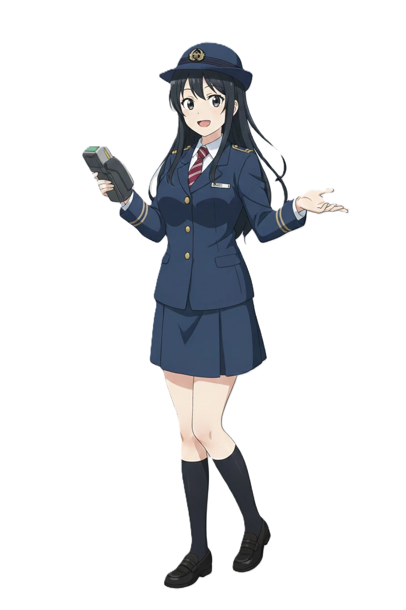 박빛나 |
 김소빈 김소빈 |
이덕희 | ||||
목차
1. 개요
본 문서는 효빈권 전철 캐릭터 사업 및 레일 루미네 유니버스 세계관에 등장하는 기타 조연, 주인공들의 가족, 그리고 단역(엑스트라) 인물들을 정리한 문서이다. 공공기관의 마스코트임에도 불구하고 애니메이션 스튜디오의 광기 어린 방대한 설정 집착 덕분에 각 인물들의 족보(본관)와 세세한 직업, 심지어 생일까지 구체적으로 존재한다. 이쯤 되면 도시 자체가 거대한 설정 놀음판이다.
2. 마스코트 캐릭터의 가족
메인 마스코트 캐릭터들의 성격과 세계관의 근원이 되는 가족 구성원들이다. 각 캐릭터의 미친 텐션이 어디서 기원했는지 알 수 있는 훌륭한 유전자 데이터베이스이기도 하다.
2.1. 효빈교통공사 가족 (1호선 ~ 창전선)
■ 1호선 고나미 일가
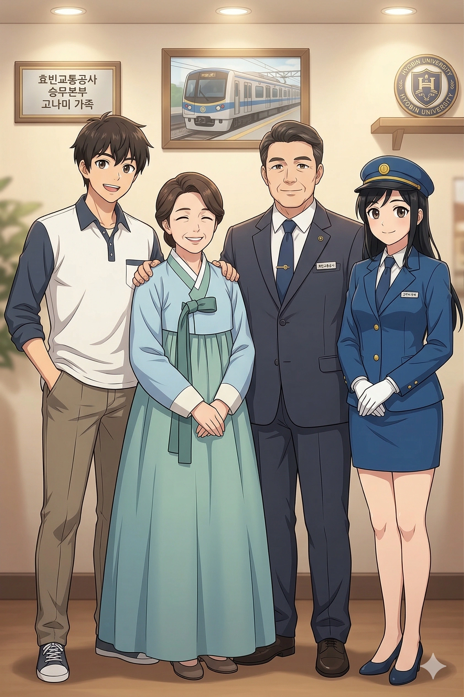
고강철 (高鋼鐵)
고나미의 깐깐한 FM 성격의 완벽한 원흉이자 반면교사. 명절에는 가족들과 평범하게 윷놀이를 하는 대신 거실 한가운데서 광기의 철도 수신호 배틀을 벌이는 기행을 일삼는다.
특수 설정 매일 아침 거실 벽시계를 코레일 타임서버와 0.1초 오차 없이 완벽하게 동기화하는 강박증이 있다. 인간 NTP 서버
이정음 (李正音)
고나미에게 안내방송 조기 교육을 시킨 달인. 화를 내지 않고 문법을 지적하며 뼈를 부러뜨리는 고차원적인 화법을 구사한다.
특수 설정 집안에서 은어, 비속어, 잘못된 띄어쓰기 및 장단음 사용 시 즉각적인 디렉팅이 들어온다. 이분 앞에서 나무위키 문서를 편집하면 실시간으로 첨삭당한다.
고나루 (高那婁 / Ko Naru)
철덕 가족들 사이에서 영원히 고통받는 1호선의 동생. 고나미 전담 취객 수송 구원열차 역할을 한다. 길을 걷다 무의식적으로 전동차 모터 연식을 맞추는 자신을 발견하고 "아, 나도 오염됐구나"라며 절망한다.
특수 설정 매일 아침 6시, 아버지에 의해 철도 건널목 경보음(땡땡땡) 알람으로 기상하는 가혹한 형벌 조기 교육을 받고 있다.
■ 2호선 하루빈 일가
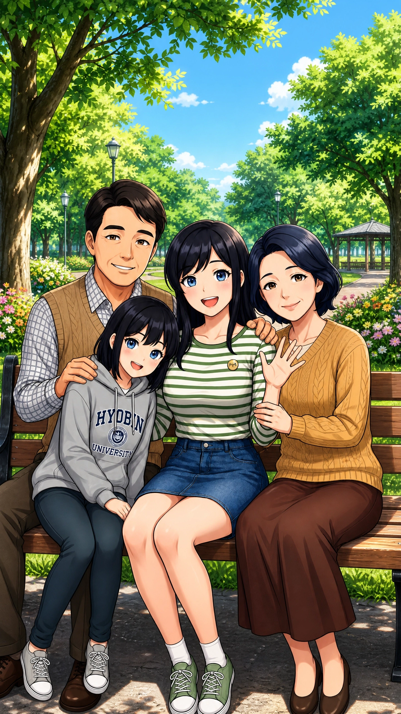
하진우 (夏鎭宇 / Ha Jin-woo)
하루빈의 파워 인싸 성격 지분 50%의 제공자. 전형적인 K-딸바보 아재로, 고강철(1호선 부)의 살벌한 철덕 가풍을 전해 듣고 경악을 금치 못했다고 한다.
특수 설정 시청 공식 유튜브 채널에 2호선 역무원인 딸 하루빈을 억지로 출연시키려다 컷당한 전적이 있는 팔불출 아빠다.
최서연 (崔瑞姸 / Choi Seo-yeon)
북구 네임드 맛집인 '하루 어머니네 빵'의 주인. 가업을 땡땡이치는 딸의 등짝을 거침없이 스매싱하는 등짝 스매싱의 달인.
특수 설정 눈치가 백단이라 딸들의 기분이 안 좋은 날이면 귀신같이 알아채고 특제 단팥빵을 만들어 입에 쑤셔 넣어준다.
하루아 (夏樓娥 / Ha Ru-a)
언니와 똑 닮은 예비 새내기 지망생. 퇴근하고 돌아온 언니의 피곤한 아재 개그 드립에 자비 없는 솜방망이 펀치로 응수한다.
특수 설정 언니가 사준 오버핏 효빈대학교 후드티를 마치 전투복처럼 매일 착용하고 다닌다.
■ 3호선 박라미 일가
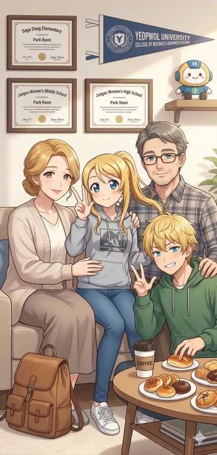
그리고 할머니도 빠져있다.
이리차드 (李理察 / Richard Lee)
박라미 가문의 금발벽안 유전자 근원이자 로맨티스트 외할아버지. 전형적인 텍사스 카우보이 외형을 하고 있으나, 구수한 효빈 사투리를 완벽하게 구사하는 뼛속까지 한국인 귀화인이다.
특수 설정 손주들에게 항상 한국인의 '밥심'을 강조하며 김치찌개를 즐겨 드신다.
유순자 (柳順子 / Yoo Soon-ja)
이리차드의 아내이자, 박라미의 친할머니. 10대 시절에는 소녀공으로 일하며 팍팍한 시대의 풍파를 온몸으로 견뎌냈고, 20대 무렵 미군기지 식당에서 일하게 되었다. 젊은 시절에는 주변 남자들이 번호표를 뽑고 대기할 정도로 빼어난 미인이었으며, 이리차드 역시 식당에서 그녀를 보자마자 첫눈에 반해버렸다고 한다. 처음에는 말도 안 통하는 파란 눈의 외국인이 자꾸 치근덕대는 탓에 매일같이 개같이 싸우며 앙숙처럼 지냈으나, 어느 날 불량배들에게 얽혀 위험에 처한 그녀를 이리차드가 텍사스 마초 핏줄을 발휘해 영화처럼 구출해주면서 제대로 플래그가 꽂혔고, 결국 국경을 뛰어넘은 세기의 로맨스를 찍으며 결혼에 골인했다. 151cm의 작은 체구에서 뿜어져 나오는 짬바이브와 포스가 장난이 아니며, 손녀 라미의 미친 친화력과 억척스러운 생존력, 그리고 타고난 미모는 100% 할머니의 유전자에서 비롯되었다.
특수 설정 구수한 사투리에 미군 부대 짬바에서 우러나온 실전 압축 영단어를 기가 막히게 섞어 쓰는 독특한 화법을 구사한다. 남편 이리차드가 텍사스 카우보이 스타일의 느끼한 멘트를 칠 때마다 주책맞다며 가차 없이 등짝을 후려치는 집안의 실질적 서열 1위. 라미가 대학 성적표를 화려하게 말아먹고 왔을 때 "오 마이 갓이다 이 화상아! 니 뇌는 장식이여?!"라며 밥주걱을 들고 쫓아갔다는 전설이 있다.
박선호 (朴善浩 / Park Seon-ho)
자유분방한 혼혈 가족을 든든하게 지탱하는 전형적인 K-가장. 사무소 책상에 자신의 딸인 3호선 박라미 인형을 자랑스레 배치해 두었다.
특수 설정 집에서 아내와 다툴 때 영어가 딸려 밀리기 시작하면 무조건 한국어만 고집하는 비겁한 꼼수를 부린다.
이애련 (李愛蓮 / Elena Lee)
이리차드의 딸로 1/2 혼혈이다. 박라미의 압도적인 외모와 텐션을 그대로 물려준 장본인. 아침 식사는 무조건 아메리칸 브렉퍼스트를 차려낸다.
특수 설정 화가 나면 영어가 속사포처럼 튀어나오며, 이때 가족들은 가족 공식 묵언수행 버튼이 눌린 듯 아무 말 없이 조용히 식탁에서 도넛만 파먹는다.
박루이 (朴壘伊 / Louie Park)
누나 박라미와 판박이인 쿼터 혼혈 금발 오빠. 본인 스스로를 자칭 '최고의 게이머'라 칭하는 겜돌이. 매일같이 매를 버는 오빠 포지션이다.
특수 설정 동생을 항상 버터 발린 발음으로 'Rami'라 부르며 허세를 부리다 물리적 타격을 입는다. 초동안이라 밖에서 고등학생으로 자주 오해받는다.
■ 4호선 다로나 일가
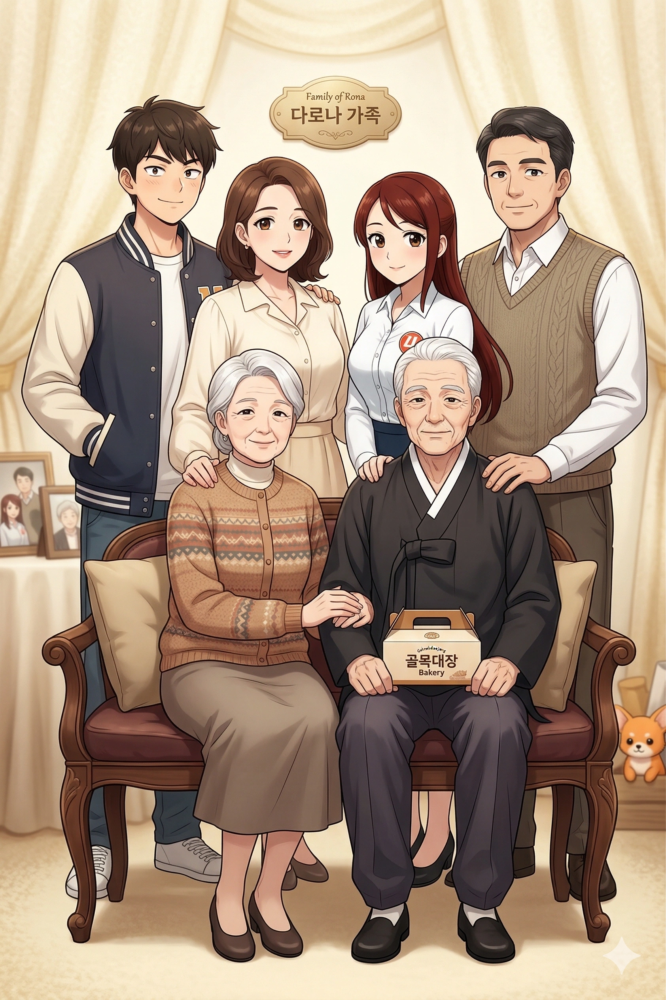
다형만 (多炯萬 / Da Hyeong-man)
다씨 가문의 기둥이자 1세대 제빵 장인. 평생 개량한복을 고집하는 고풍스러운 풍채를 지녔다.
특수 설정 손녀 다로나가 4호선 현장에서 무사고로 일하길 기원하며 특별한 '별 모양 앙금빵'을 개발했다. 이 빵을 먹으면 산업재해를 피할 수 있다는 소문이 있다.
박순임 (朴順任 / Park Sun-im)
다로나의 다정다감한 성격의 100% 원조. 손주들의 고민을 들어주는 가문의 확실한 힐링 포스트 역할을 한다.
특수 설정 특유의 꽃무늬 패턴 가디건을 즐겨 입으며, 빵집 손님들에게 손녀 다로나가 메트로에 취업한 것을 매번 은근슬쩍 자랑하신다.
다길수 (多吉秀 / Da Gil-su)
다로나의 직장 대선배이자 가문을 책임지는 든든한 K-가장. "뼛속까지 공돌이" 마인드로, 쉬는 날에는 집안 빵집의 배달을 돕는 효자다.
특수 설정 "궤도가 틀어지면 인생도 틀어진다. 정비만이 살길이다"를 평생의 좌우명으로 삼고 있다.
송예지 (宋睿智 / Song Ye-ji)
집안의 실질적인 컨트롤 타워이자 다로나 미모의 원조. 박라미의 어머니(이애련)와 엽월대 직속 선후배 사이다.
특수 설정 극도로 화가 나면 오히려 완벽한 존댓말을 사용하여 서늘한 분위기를 만든다. 가장 무서운 타입이다. 이때는 시아버지 다형만마저 빵집 주방으로 피신하게 만든다.
다로준 (多路準 / Da Ro-jun)
엽월대 과잠을 문신처럼 입고 다니는 듬직한 체격의 오빠. 밤늦게 산업 현장에서 교대 퇴근하는 여동생을 늘 역 앞까지 마중 나가는 츤데레다.
특수 설정 유도부 주장다운 산만한 덩치를 자랑하지만, 가문을 반려견 코리 앞에서는 무장해제되어 순둥이로 변한다.
고로 (Goro)
치명적인 식빵 모양 엉덩이 때문에 빵집 손님들이 진열장에 구워낸 진짜 식빵인 줄 착각하는 해프닝이 빈번하다.
특수 설정 목에는 4호선 로고가 정식으로 박힌 목줄을 착용하며, 다로나가 퇴근할 때마다 가장 먼저 식빵 엉덩이를 흔들며 맞이한다.
■ 5호선 미소하 일가
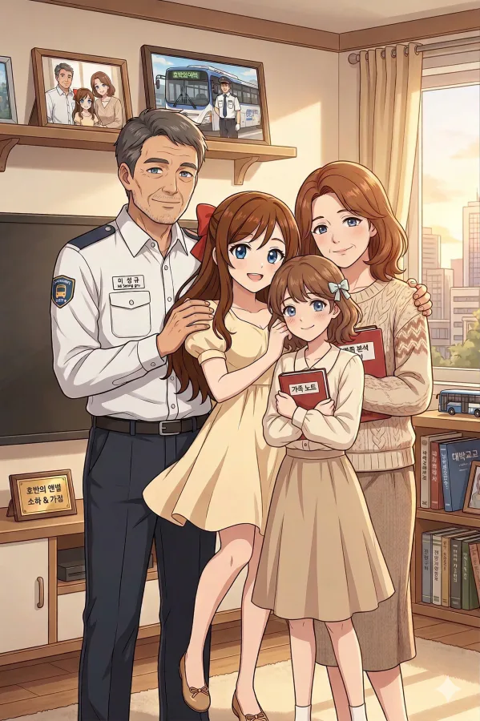
미성규 (米成規 / Mi Seong-gyu)
윤대환 전 시장 체제의 악랄한 교통 행정에 의한 비극적인 피해자. 미소하가 불합리한 행정에 맞서 '통계와 다중회귀분석'을 완벽한 무기로 삼게 된 결정적인 계기를 제공했다.
특수 설정 윤대환 지시 하에 이루어진 75인승 과적 운행의 후유증(PTSD 및 디스크)으로 인해 현재까지 앓아누워 투병 중이다.
오순임 (吳順任 / Oh Soon-im)
집안의 실질적인 가장. 소하의 극강 맵부심은 어머니에게서 물려받은 것이다. 딸이 꿋꿋하게 역에서 근로장학생 활동을 하는 것을 대견해한다. 이 집안의 진정한 흑막(?)
특수 설정 딸이 교통공사 예산팀을 논리로 조지기 위해 만든 무시무시한 300페이지 분량의 데이터 바인더 제본 작업을 직접 도와주었다.
미소율 (米昭律 / Mi So-yul)
냉철한 소하를 무장해제시키는 유일한 '역린'. 145cm의 세계관 최단신 콩알 요정으로, 언니를 대신해 아버지를 묵묵히 간호하는 속 깊은 동생이다.
특수 설정 팩폭 스킬 전무한 순수 결정체. 과거 유리아(8호선)를 화나게 만든 전설의 '콩알 발언 사건'의 장본인이자 지독한 금사빠 기질을 갖고 있다.
■ 6호선 라세나 일가
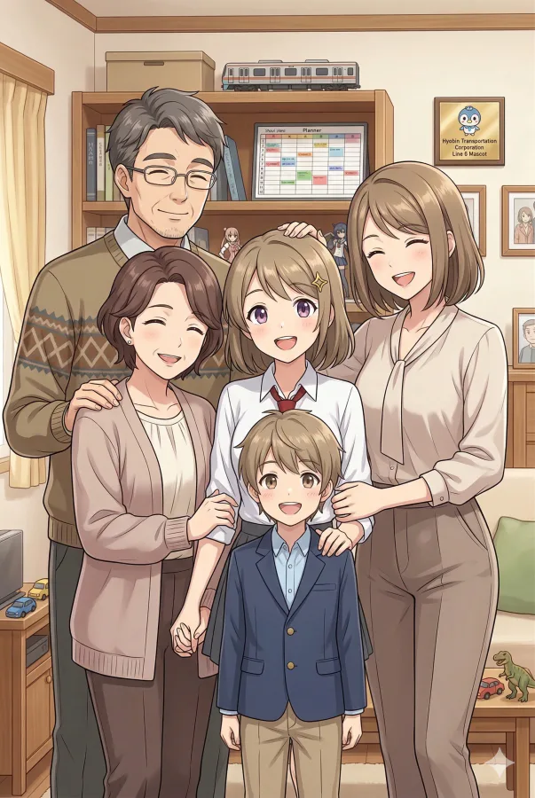
라동식 (羅東植 / Ra Dong-sik)
개인 전동차 모형을 소유할 정도로 철도에 진심이며, 라세나가 컴덕 기질을 갖게 한 유전자의 근원. 딸이 수집한 수상한 피규어 조형을 같이 진지하게 감상해 주는 대인배 아빠다.
특수 설정 주말마다 딸의 방에 있는 '6호선 마스코트 명패'를 극세사 수건으로 정성껏 닦는 것이 주요 일과다.
김은혜 (金恩惠 / Kim Eun-hye)
남편과 딸의 피규어 난장판도 인자하게 웃어넘기는 대인배. 라세나가 HAF에서 입을 일본풍 의상의 넥타이를 손수 매만져 준다.
특수 설정 멘붕하여 방에서 게임을 하며 고통받는 딸을 발견하면, 방문을 열지 않고 문틈으로 조용히 간식만 밀어 넣은 뒤 퇴장하는 엄청난 내공을 지녔다.
라세하 (羅世夏 / Ra Se-ha)
현실 인싸의 선두주자. 동생의 음지 덕질을 관조하면서도, 본인은 직업병을 살려 사진 촬영 취미를 즐긴다 (집안 곳곳에 걸린 고퀄리티 액자 사진들의 출처).
특수 설정 라세나의 사복 패션을 무자비하게 피드백하며, "내 동생 6호선 마스코트임ㅇㅇ"이라며 인스타 스토리에 영구 박제하는 악취미가 있다.
라준혁 (羅俊赫 / Ra Jun-hyeok)
자동차와 기차 덕후인 초통령 꿈나무. 거실 방바닥에 굴러다니는 공룡과 철도 장난감을 밟아 가족들의 발바닥을 파괴하는 실제 주인이다.
특수 설정 6호선을 탈 때 라세나 누나의 안내방송이 스피커로 나오면, 전동차 한가운데서 신나게 엉덩이 춤을 춰버려 가족들을 부끄럽게 만든다.
■ 7호선 임세정·임세하 자매 일가
효빈시 최강의 전투력과 생활력을 자랑하는 임씨 6남매 대가족이다. 이 집안이 굴러가는 것 자체가 기적이다.
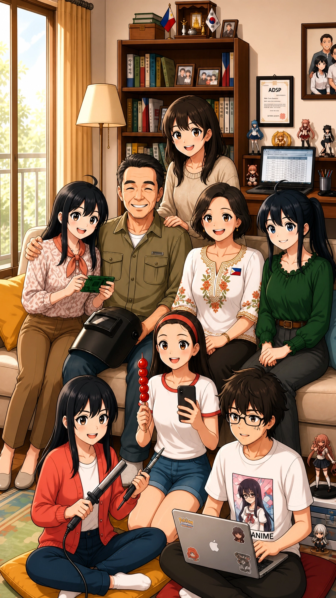
임진욱 (林鎭旭 / Im Jin-wook)
조기 공학 교육의 선구자이자 뼛속까지 공대 너드인 둘째 딸 임세하의 가장 든든한 아군. 세정의 전설적인 '룸피아 롤링 머신 폭주 사건' 때 가장 크게 웃었다.
특수 설정 건설 현장에서 버려진 폐부품이나 멀쩡한 인버터를 볼 때마다 수거하여 쓰레기 세하의 생일 선물로 갖다 준다.
김영자 (金英子 / Maria de los Santos)
집안 서열 0위. 이 집안의 진정한 최종 보스. 이중언어 사용을 단호히 거부하며 한국어만 고집한다. 2교대 육체노동을 하며 6남매를 굳건하게 키워낸 철의 여인이다.
특수 설정 6남매가 단체로 사고를 치거나 세하의 위험천만한 인두기를 압수할 때만 예외적으로 원어민 타갈로그어 랩을 시전하며 물리 치료 등짝을 박살 낸다.
임세현 (林洗賢 / Im Se-hyun)
6남매 중 유일한 청일점. 모바일 게임의 애니 가챠 확률을 소수점까지 뜯어보는 악성 분석가다. 큰언니 세정의 엄청난 구박 속에서도 꿋꿋하게 해외 굿즈 직구를 모니터링한다.
특수 설정 세하가 공유기 대역폭을 서버 테스트로 모조리 제한해버리자, 핑 튀는 모니터 앞에서 괴성을 지르는 영상이 유튜브 쇼츠 밈으로 영구 박제되었다.
임선아 (林善娥 / Im Seon-a)
6남매 중 유일하게 이름에 '세(洗)'자 돌림을 쓰지 않는 돌연변이. 씹덕 오빠와 기계 괴물 너드 언니(세하) 사이에서 유일하게 살아남은 기 빨린 정상인이다.
특수 설정 집안에서 서열 다툼이나 무력 충돌이 터지면 직접 개입하지 않고, 조용히 밖으로 나가 큰언니(세정)를 소환해 평정을 유도하는 지능캐다.
임세연 (林洗娟 / Im Se-yen)
광기가 넘치는 6남매 사이에서 눈물겹게 '일반인 정체성'을 수호하고 있다. 매일 이과 괴물 언니와 마라탕후루 중독 막내 동생 사이에서 영원히 고통받는다.
특수 설정 자신의 소중한 고데기가 세하의 인두기 부품으로 마개조된 것을 발견하고 아침마다 화장대 앞에서 절규한다.
임세빈 (林洗彬 / Im Se-bin)
이국적인 혼혈 비주얼을 지녔으나 내용물은 100% 토종 K-여중생. 세하가 만든 각종 괴상한 기계장치의 생체 실험체 1호로 활동(?) 중이다.
특수 설정 길을 가다 외국인이 영문으로 길을 물어보면, 얼굴만 필리핀계일 뿐 영어를 전혀 못해 "노 잉글리쉬!"를 외치며 자전거로 광속 도주한다.
■ 8호선 유리아 일가
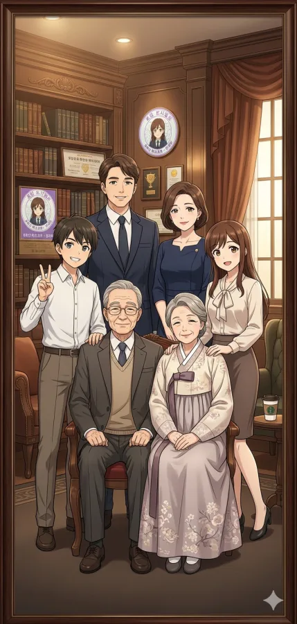
유만성 (柳萬成 / Yu Man-seong)
평당동 대저택에 위치한 거대 서재의 주인. 자산가 가문의 정신적 지주로, 엄격하지만 손녀 유리아의 기계 분해(?) 창의력만큼은 아낌없이 칭찬한다.
특수 설정 리아가 8호선 마스코트로 취임 후, 공사에서 받아온 대형 액자를 서재 정중앙에 걸어두고 매일 극세사 천으로 가장 뿌듯하게 닦는다.
권명자 (權明子 / Kwon Myeong-ja)
평소 전통 맞춤 한복을 착용하며, 일본인 며느리 야나기 에미를 친딸 이상으로 각별히 챙긴다. 손녀 리아가 사고를 치면 치맛자락 뒤에 숨겨준다.
특수 설정 손녀 리아의 교복에서 진동하는 방청윤활유(WD-40) 냄새를 두고 "백화점 향수보다 낫다"며 무조건적으로 감싸고 도는 무적의 아군이다.
유태진 (柳泰鎭 / Yu Tae-jin)
유리아의 손에 몽키스패너를 쥐여준 유전자 근원이자 원조 공대 너드. 딸이 가전제품 제어반 배선을 능숙하게 따는 솜씨를 보면 야단치기보단 감탄부터 한다.
특수 설정 주말마다 아내에게 도서관 간다고 구라를 치고 거짓말을 한 뒤, 딸과 함께 청계천 뺨치는 공구 상가 비밀 투어를 돌며 희귀 부품을 밀반입한다.
유혜미 / 야나기 에미 (柳惠美 / Yanagi Emi)
공대 부녀의 기계 해체 폭주를 막는 분노의 1차 억제기이자 최고 피해자. 사고를 치는 딸보다 그걸 방관하며 박수 치는 남편 때문에 더 혈압이 오른다.
특수 설정 고가의 신형 IH 압력밥솥 완전 분해 사건 이후, 일본어 네이티브 급의 무서운 속도로 '주방 내 공구 소지 절대 불허' 경고문을 일본어로 작성해 냉장고에 부착했다.
유리혁 / 야나기 리쿠 (柳利革 / Yanagi Riku)
한일 양국에서 자연스럽게 쓰이는 이름(리쿠)을 가졌다. 누나 리아가 마스코트가 된 것을 자랑스러워하며 학교 친구들에게 8호선 스페셜 교통카드를 뿌리고 다닌다.
특수 설정 과거 누나에게 마개조된 무선 조종 미니 전동차 조종을 강요당하다 벽을 뚫을 뻔한 PTSD 이후, 누나의 생체 피실험체 2호가 되기를 완강히 거부하고 있다.
■ 빈효선 전노아 일가
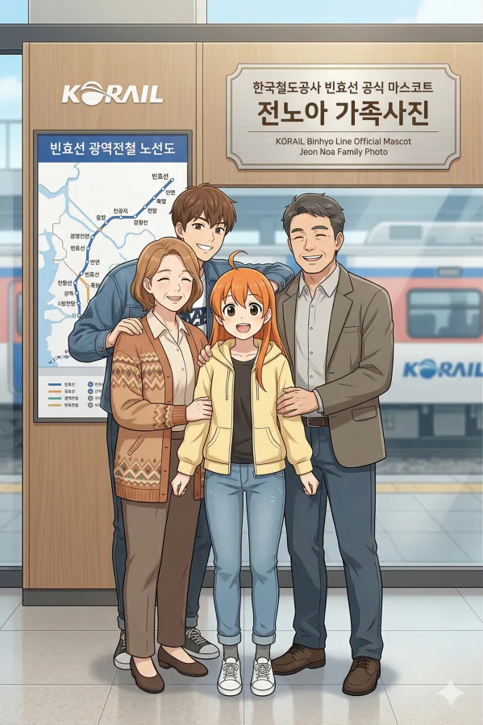
전창원 (田昌元 / Jeon Chang-won)
전노아의 행정학 멘토. 악성 민원인도 온화하게 진압하는 달인이며, 딸이 연습삼아 써온 말도 안 되는 예산 기안서 초안에 깐깐한 빨간펜 피드백을 해준다.
특수 설정 딸 노아가 코레일 본사 임원들의 예산까지 싹쓸이로 털어먹는 거대한 스케일의 관종으로 진화하자, 공무원으로서 내심 경악을 금치 못하고 있다.
임윤아 (林潤娥 / Im Yun-a)
노아의 핵인싸 텐션의 근원이자 가문의 확실한 힐링 포스트. 공무원 남편과 대학생 딸이 밥상머리에서 행정 용어로 말싸움을 하면 단박에 진압한다.
특수 설정 노아가 대학교 철도 동아리 조별과제 조원들을 집에 우르르 데려오면, 상다리가 부러질 정도의 정식을 차려내 자취생들을 감동시킨다.
전선우 (田善宇 / Jeon Seon-woo)
캠퍼스 핵인싸다운 기질로, 평안명대 에브리타임 게시판에 동생 노아의 마스코트 발탁 축하글을 최초로 도배 작성한 츤데레 1등 공신이다.
특수 설정 철도 동아리 일로 야작(야간작업)을 하다 집에 들어와 슬라임처럼 쓰러진 동생을 보면, "지금 니 영정사진 찍냐"며 툭 던지듯 초코바를 챙겨준다.
■ 창전선 심세이 일가
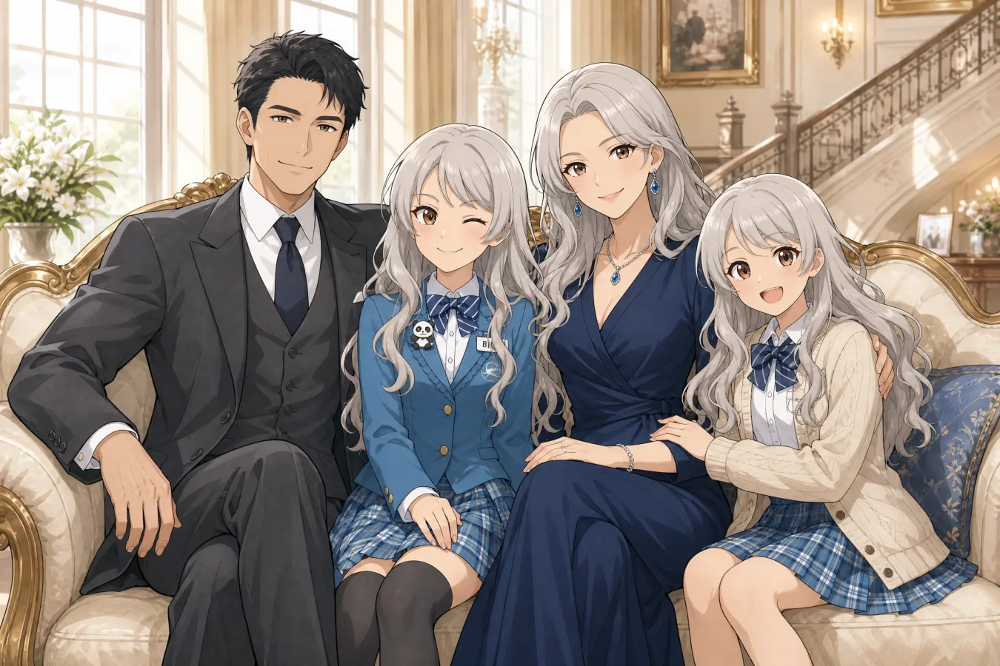
심원석 (沈源石 / Shim Won-seok)
효빈시 최고 부촌인 창전동 리버럴의 표본. 영 앤 리치 집안의 든든한 지원군으로, 딸이 좋아하는 레서판다 브로치를 직접 스페인 아마존 직구로 구해준다.
특수 설정 세이가 당황해서 덜컹거리는 기괴한 심해 등각류(구소쿠무시) 춤을 출 때마다, "스페인 플라멩코 실력이 늘었구나!"라며 진심 어린 박수를 쳐준다.
심가련 / 카르멘 세라노 (沈嘉戀 / Carmen Serrano)
세이 특유의 미친 라틴 텐션을 만들어낸 스페인인 어머니. 진상을 터는 법을 스페인어 속사포 랩으로 밥상머리에서 조기 교육시킨다.
특수 설정 딸 세이가 자신의 기괴한 구소쿠무시 춤을 '전통 플라멩코의 현대적 변형'이라고 우기면, 위대한 카스티야 왕국 조상님을 운운하며 빗자루로 자비 없는 스매싱을 날린다.
심세리 / 시즈무 세리 (沈世莉 / Shizumu Seri)
언니와 정반대인 극단적 INTJ 성향의 동태눈깔 냉미녀. 7호선 일가의 발랄한 막내 임세빈과 같은 나이지만 조용히 거리두기를 시도하며 언니의 폭주를 진압하는 전담 요원이다.
특수 설정 폰에 언니 이름을 '미친 심해 생물'로 저장해 두었으며, 언니가 역사 내에서 춤추는 직캠 영상을 발견하면 가족 단톡방에 무표정으로 영구 박제시킨다.
2.2. 타 지역 참전조 가족 (빈주, 덕주)
■ 빈주1 박빛나 일가
빈주시 늑골동 전통시장을 꽉 잡고 있는 5남매 대가족. 집안 자체가 하나의 야생 정글이다.
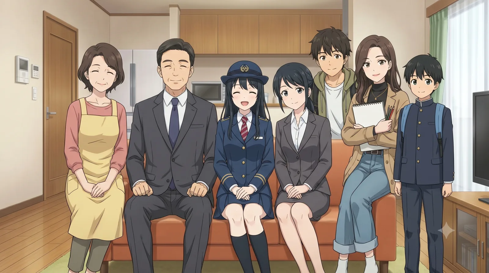
박정만 (朴正萬 / Park Jeong-man)
5남매 집안이 육탄전으로 싸울 때 조용히 안방으로 대피하는 묵직한 가장. 딸 빛나가 월급날 수표를 받아올 때만 가장 흐뭇하게 미소 지으신다.
특수 설정 빛나가 명절에 투뿔 한우를 선물로 싸오면, 빈주교통공사(BURC) 사장님을 찬양하며 보청기를 빼버리고 흐뭇하게 소주 한잔을 기울인다.
김선자 (金善子 / Kim Seon-ja)
야생의 5남매 정글을 통치하는 최종 포식자. 빨간 고무장갑 하나로 집안 서열을 완벽히 정리하며, 빛나의 호텔급 결벽증 청소 DNA는 어머니로부터 물려받은 것이다.
특수 설정 빛나가 월급봉투를 바치는 순간 모든 잔소리가 분쇄된다. 남는 공사 구내식당 식권을 반찬가게 물물교환 화폐로 치환해 버리는 무서운 경제 관념을 가졌다.
박찬우 (朴燦宇 / Park Chan-woo)
집안의 합법적 스트레스 해소용 샌드백이자 가문의 수치. 빛나가 진상 승객 때문에 분노하여 휴대용 단말기 모서리로 섀도우 복싱을 할 때 메인 타겟이 된다.
특수 설정 깐족거리다 빛나가 방 두꺼비집을 내려버리면 눈빛에 버로우를 탄다. 하지만 동생이 야근 후 앓아누우면 가장 먼저 약국으로 뛰어가는 츤데레 오빠이기도 하다.
박윤나 (朴允娜 / Park Yun-na)
화장품 무단 횡령을 두고 빛나와 매일 자매 육탄전을 벌이는 라이벌. 빛나의 전술적인 유니폼 핏을 호시탐탐 탐내는 노양심의 소유자다.
특수 설정 서로 물어뜯고 싸우다가도 직장 상사를 욕할 때만큼은 빛나와 완벽한 소울메이트가 된다. 최근 성수동 마카롱 감성에 빠져 빛나의 심기를 건드린다.
박이나 (朴伊娜 / Park I-na)
집안에 물감 난장판을 제조하는 지갑 털이범. 빛나가 화를 내려 하면 살인적인 백허그와 립서비스 애교로 상황을 단숨에 종결시킨다.
특수 설정 언니의 성과급이 들어올 때마다 '과제 재료비' 핑계로 돈을 가장 많이 뜯어가는 주범. 한 번은 엄마가 먼저 수표를 채가자 바닥을 치며 후회했다.
박지우 (朴智宇 / Park Ji-woo)
밤새 롤(LoL)을 하며 교대근무자인 빛나의 수면권을 침해하는 주범. 빛나가 3개 노선을 독박으로 뛰고 퇴근한 날, 퀭한 살기 포스에 지려서 알아서 강제 취침을 당한다.
특수 설정 누나의 통장 잔고 확인용 공인인증서를 몰래 훔쳐보려다 탈탈 털린 전적이 있으며, 까불다가 빛나의 단말기 모서리로 16연타를 맞을 대기자 1순위다.
■ 빈주2 김소빈 일가
어머니를 제외하고 모두가 무시무시한 피지컬을 자랑하는 근수저 집안. 소빈이 역내 진상을 합법적(?) 팩폭으로 때려잡을 수 있는 든든한 물리적 배경이다.
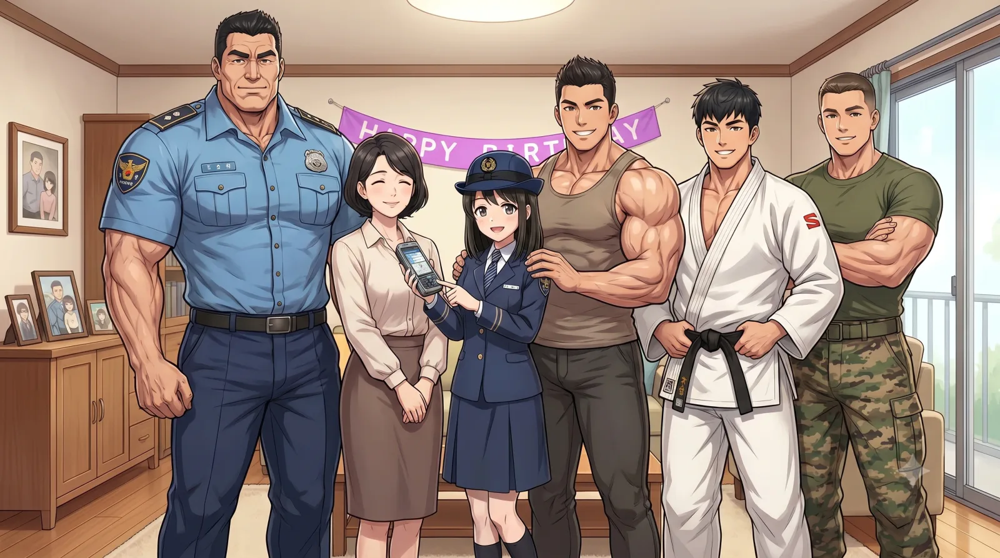
김대호 (金大虎 / Kim Dae-ho)
인간 흉기 3형제의 유전자를 제공한 강력계 팀장님. 막내딸 소빈이 역에서 합법적으로 진상들을 경찰에 인계할 때마다 속으로 내심 감탄을 금치 못한다.
특수 설정 소빈이 진상을 만날 것에 대비해 휴대폰 단축번호에 112 직통 라인을 세팅해 두었다. 아들들이 사고 치면 몽둥이를 들지만 딸 앞에서는 혀가 반토막 난다.
최영란 (崔英蘭 / Choi Yeong-ran)
소빈의 전매특허인 '맑은 눈의 광인' 멘탈의 100% 원조이자 집안 서열 0위. 엄청난 스케일로 먹어치우는 짐승 같은 아들 셋을 감당하기 위해 아예 뷔페 식당을 차렸다.
특수 설정 덩치 큰 오빠들이 막내딸 소빈의 탕후루를 뺏어 먹으려 하면 주방에서 초대형 쇠국자를 투척하며, "밥 안 준다" 한마디로 3초 만에 맹수들을 진압한다.
김성빈 (金成彬 / Kim Seong-bin)
근손실을 병적으로 두려워하는 장남. 동생 소빈을 울리는 자는 피눈물을 흘리게 만들어주는 든든하지만 부담스러운 내로남불 행동대장 1호다.
특수 설정 동생이 인스타그램 릴스 영상을 찍을 때마다 뒤에서 광배근을 펴고 덤벨을 들어 올려 기행을 부리며 관종 조회수를 훔쳐 가며, 소빈에게 강제로 PT 유도를 한다.
김상빈 (金相彬 / Kim Sang-bin)
소빈에게 시비를 거는 진상들 앞에 검은색 봉고차를 끌고 강림하는 행동대장 2호. 소빈이 진상의 도복 깃을 완벽하게 틀어쥐는 호신술을 전수해 준 장본인이다.
특수 설정 소빈의 휴대폰 단축번호 2번 현장 출동 요원. 냉장고에서 소빈의 마카롱을 몰래 빼먹었다 걸리면, 눈빛만으로 엎어치기를 당할 듯한 압박감을 받는다.
김서빈 (金瑞彬 / Kim Seo-bin)
소빈과 가장 나이 차이가 적게 나는 탕후루 웬수지간. 소빈이 아껴둔 아샷추를 훔쳐 먹어 평온한 맑눈광 동생 입에서 쌍욕을 유발하는 행동대장 3호다.
특수 설정 소빈의 단축번호 1번 5분 대기조다. 역 앞 PC방에서 대기하다가 여동생이 퇴근하면 같이 집에 간다. 본인 피셜 군대 후임에게 동생을 소개해주려 했으나 '파괴적 광인'이라며 포기했다고 한다.
■ 덕주1 이덕희 일가
대만 화교 어머니와 국밥 러버 아버지가 결합한 얼큰하고 글로벌한 가풍. 딸 덕희의 미친 갭모에 설정의 완벽한 기반이다.
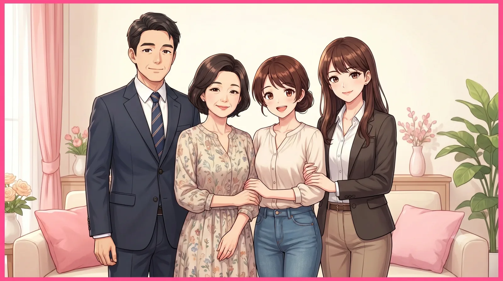
이정길 (李正吉 / Lee Jeong-gil)
덕희의 뚝배기 브레이커 급 '국밥 유전자'의 원조. 건설 현장 십장 메이트들과 함께 퇴근 후 뼈해장국에 다대기를 풀어먹는 것이 유일한 낙인 소박한 아버지다.
특수 설정 현장 작업복에 덕희의 핫핑크 전단지와 명찰을 달고 다니며 자부심을 부리지만, 딸이 집에서 '니코니코니'를 시전할 때면 조용히 보청기 볼륨을 낮춘다.
왕려화 (王麗華 / Wang Lyeo-hwa)
1/4 대만계 화교 혈통의 소유자. 덕희가 진상 승객을 만났을 때 튀어나오는 3개 국어(한국어, 중국어, 덕주 사투리) 하이브리드 '아이야(哎야)' 잔소리 랩의 절대적인 원조다.
특수 설정 딸들이 매번 아이돌(럽라) 굿즈를 한가득 사 들고 오면, 길바닥에 돈을 버렸냐며 묵직한 중화식 웍 국자로 자비 없이 등짝 스매싱을 날린다.
이덕경 (李德慶 / Lee Deok-gyeong)
오프라인 행사 때마다 거대한 대포 카메라를 들고 다니는 유명 남돌 홈마(홈마스터). 정작 자기 동생의 덕질은 한심하게 쳐다보는 전형적인 내로남불 K-장녀다. 직업병 탓에 동생의 1호선 상징색을 보고 "핫핑크가 아니라 마젠타(Magenta)"라며 매번 팩폭을 꽂는다.
특수 설정 동생 덕희가 몰래 자신의 디올 명찰을 훔쳐 달고 행사장에 출근한 것을 발견하자, 즉각 '횡령죄'라며 인스타 부계정에 박제시켜 버렸다. 하지만 콘서트 티켓팅 때는 서로의 금손을 빌리는 '어둠의 빠순이 동맹' 파트너이기도 하다.
3. 효빈도시철도 미디어믹스 조연 및 엑스트라
효빈교통공사가 자체 제작하는 웹/극장판 애니메이션(<달려라! 레일루미네>, <철도부!> 등)의 서사를 풍부하게 채워주는 주변 인물들이다. 대다수가 일상적인 빌런이거나 주인공들의 사이다 활약을 돋보이게 하는 샌드백 장치로 기능한다. 단역이나 엑스트라 주제에 쓸데없이 성우진이 초호화 캐스팅인 것으로 악명(?)이 높다. 지나가는 행인 A에 코야스 타케히토를 캐스팅하는 미친 제작진의 위엄. 이쯤 되면 교통공사 예산을 성우 섭외에 다 쏟아붓는 게 학계의 정설이다.
3.1. 행정 및 유관 기관
효빈시장 (효빈광역시장)
효빈시의 100원 요금제를 과감하게 결재하여 추진한 인물이자 HAF의 최종 결재권자. 겉으로는 근엄한 척하지만 실상은 5호선 미소하의 숨은 성덕(성공한 덕후)으로, 집무실 책상 서랍에 미소하 아크릴 스탠드가 숨겨져 있다. 서류 결재할 때 펜을 한 바퀴 돌리며 나카무라 유이치의 목소리로 "결재(決裁)." 라고 읊조리는 씬이 쓸데없이 간지폭발이라 시청자들을 킹받게 만들었다.
특수 설정 시장실 비서가 브리핑할 때 미소하 굿즈 결제 내역이 찍힌 개인 카드 영수증을 흘려서 식은땀을 흘리는 개그 씬의 단골 손님이다.
정시원 (鄭始元 / チョン・シウォン)
빈효선 전노아 캐릭터를 탄생시킨 위대한 창조주. 보수적인 국영기업인 코레일 소속 임원이면서도 체통을 완벽하게 내던져버리고 양손 가득 굿즈 플렉스를 시전하는 찐팬이다.
특수 설정 야스모토 히로키의 극저음 동굴 목소리로 "전노아 넨도로이드... 3개 예약해 둬라. 소장용, 관상용, 포교용이다." 라고 비서에게 지시하는 명장면을 남겼다. 이게 코레일 본부장이 할 소리냐
국회 김 의원 (국토교통위원회)
HAF 현장의 배리어 프리 구역 엘리베이터에서 특권의식을 앞세워 새치기를 시도하는 전형적인 빌런. 하지만 5호선 미소하가 웃는 얼굴로 "의원님의 이번 총선 낙선 확률은 85%입니다."라며 살벌한 데이터를 들이대자 꼬리를 말고 도망친다. 긴가 반죠의 위엄 넘치는 목소리로 찌질하게 도망가는 갭 모에가 압권이다.
국회 김 의원 보좌관
상사인 김 의원을 맹목적으로 보필하며 새치기 길을 뚫으려던 앞잡이. 의원이 소하의 팩폭에 멘탈이 털려 도망가자, 본인도 뻘쭘하게 뒤따라 호다닥 도망가는 추태를 부린다. 목소리는 미남형 엘리트인데 하는 짓이 삼류 악당 부하다.
시의회 최 의원
미소하 서사에서 신문 기사나 대사로 주로 언급되는 동네북. 100원 요금제를 포퓰리즘이라 비난하며 무지성 예산 삭감을 주장한다. 토비타 노부오 특유의 깐깐하고 킹받는 목소리로 억까를 시전하다가 역풍을 맞고 다음 지선에서 낙선했다는 킹리적 갓심 유력한 소문이 있다.
교육청 감사관
전노아의 치밀한 팩스 제보를 받고 현장에 긴급 출동하여 부패한 김대환 교감을 체포하는 데우스 엑스 마키나. 등장 시간은 짧지만 합법적인 명치 타격을 담당하며 시청자들에게 압도적인 사이다를 제공한다.
시장실 비서 & 본부장실 비서
미쳐 돌아가는 덕후 상사들 밑에서 고통받는 극한직업 종사자들.
시장실 비서: 시장에게 HAF 경제 효과를 브리핑하던 중, 시장이 흘린 개인 카드 '굿즈 한도 초과' 영수증을 줍고 동공 지진을 일으킨다.
본부장실 비서: 깐깐한 성격. 법인카드로 애니메이션 굿즈샵에서 128만 원이 긁힌 영수증을 발견하고 경악을 금치 못하는 비명(CV. 혼도 카에데)이 일품이다.
3.2. 효빈교통공사 실무진
본사 예산부장
전형적인 예산 삭감 꼰대. 그러나 인턴 미소하의 살벌한 '다중회귀분석 팩트 폭격'에 뼈를 맞고 땀을 뻘뻘 흘리며 단숨에 굴복해 버린다. 이카리 겐도 목소리로 쩔쩔매는 꼴이 아주 볼만하다. 회식 자리에서는 짬에서 밀리는 대학생 전노아에게까지 일침을 맞고 구석에서 소주만 홀짝인다.
본사 기획부장
실무진의 의견을 묵살하다가 국정감사에 자료를 넘겨버리겠다는 소하의 협박에 쫄아서 식은땀을 흘리며 기안에 결재한다. 정작 대수송 작전이 대성공을 거두자 태세를 전환하여 "거 봐! 내 안목이 맞았지!" 라며 무제한 소고기 회식을 주도하는 얄미운 포지션. 목소리부터가 메구레 경감이라 묘하게 정감이 간다.
시설과장
자신의 부당한 출장비 500만 원 환수 건을 힘없는 인턴들에게 독박 씌우려다, 트램을 지켜낸 영웅 임세정 대리와 눈썰미 만렙 다로나의 살벌한 팩폭 콤보에 영혼까지 탈곡당한다. 체격은 산만한데 기가 죽어 "죄송합니다..."를 연발한다.
HAF 기획팀장
첫 출근한 전노아와 임세하에게 다짜고짜 서류 100장을 던지며 "까라면 까! 여기 공기업이야!"를 시전하는 전형적인 악덕 상사. 리바이 병장 톤으로 공기업 갑질을 시전하니 뭔가 더 킹받는다. 결국 노아의 핵인싸 친화력에 휘말려 같이 야근하며 컵라면을 먹는 불쌍한 신세가 된다.
보안팀장
1층 로비 AGT 제어반 반경 3m 이내 접근을 엄격히 금지하며 위압감을 뿜어내지만, 교대 시간 단 3초의 공백을 뚫고 8호선 유리아에게 제어반 침투를 허용해 버리는 굴욕을 겪는다.
신호제어팀장
고나미의 원리원칙을 무시한 미친 안내방송에 분노하여 징계를 내리려 했으나, 그녀가 들이민 완벽한 신호 제어 수식에 논리로 패배하고 깔끔하게 굴복한다. 얼굴은 안 나오고 다급한 전화기 속 목소리로만 등장한다.
7호선 주임 & 역무원 동기
7호선 주임: 기 센 선배인 임세정 대리가 노려보자 기겁하며 길을 비켜주는 순종형 후배. 세정의 "해충(동생 세현) 구제 조퇴 지시"를 군말 없이 수용한다.
역무원 동기: 퇴근길에 2호선 하루빈을 만나 "본사 14층에서 꿀 빨았냐"며 부러워하지만, 알바생과 진상들에게 멘탈까지 털린 하루빈의 비참한 실체는 전혀 모른 채 해맑게 속을 긁는다.
3.3. 교육 기관 관계자
김대환 교감 (중수여고)
<철도부!>의 메인 빌런. 처남 명의의 비닐하우스 페이퍼 컴퍼니(대환 이벤트)를 통해 기자재 예산을 빼돌리며 리베이트를 수수했다. 와카모토 노리오 특유의 끈적하고 악당 같은 억양으로 "철도부는 폐부야~" 라며 어그로를 끌다가 교육청 감사관에게 끌려간다. 사필귀정의 표본.
이영숙 교장 (중수여고)
처음엔 철도부를 방관하다가 전노아가 들고 온 코레일 대기업 협찬 팸플릿의 어마어마한 지원금 액수를 보고 단숨에 홀려 예산을 승인한다. 부패 교감 체포 후, 철도 디오라마 한가운데 자신의 흉상이 우뚝 세워지는 끔찍한 굴욕을 자초하고 만다. 이노우에 키쿠코의 우아한 목소리로 비명을 지르는 게 포인트.
최기태 학생주임 (중수여고)
항상 무거운 서류철을 들고 다니며 학생들에게 위압감을 조성한다. 인원 미달이라며 가차 없이 철도부 강제 폐부 선고를 내리는 등, 학생들의 청춘을 가로막는 전형적인 꼰대 벽 역할이다. 목소리부터가 너무 세서 학생들이 말대꾸를 못한다.
윤서진 학생회장 (중수여고)
정의로운 모범생의 표본. 부패한 교감의 부당한 예산 삭감 조치에 정면으로 이의를 제기하며 주인공들의 든든한 방패막이가 되어준다. 비리 업체가 퇴출된 이후 학교의 메인 로비 한가운데를 철도 동아리 전시 공간으로 전폭 지원하는 진정한 조력자.
기계과 동기
과방 문을 벌컥 열고 들어와 임세하에게 "너 계절학기 수강료 54만 원 내야 함ㅋ"이라는 절망적인 팩트를 꽂아버린다. 그 충격에 세하는 기절해버린다. 쟈이안 목소리로 해맑게 팩트를 꽂으니 얄미움이 2배다.
복학생 A & 신입생 B
조별과제 잔혹사의 원흉들. 취업 특강(복학생)과 할머니 팔순 잔치(신입생) 핑계를 대며 무임승차를 시도하는 환장의 콤비다. 하지만 전노아의 스티브 잡스 빙의 팩폭에 다리가 풀려 주저앉고, 박라미가 하룻밤 만에 뽑아온 여신급 PPT 퀄리티에 홀려 자발적 노예로 전락한다. 이름 없는 대학생 엑스트라 1, 2에 오노 켄쇼와 야마시타 다이키를 박아버리는 미친 캐스팅비 낭비의 정수.
시립 도서관 관리자
전공 D0 성적표를 확인하고 컴퓨터실에서 방방 뛰는 박라미와 임세하에게 칼같이 무서운 정숙 경고를 내린다. 소란스러운 여대생들을 한심하다는 듯 쳐다보는 싸늘한 눈빛과 우아한 목소리가 압권이다.
3.4. 일반 시민 및 외부인
진상 차주 (불법 주차 빌런)
7호선 트램 선로 한가운데 고급 외제차를 불법 주차해 두고 역으로 성질을 내는 무개념 빌런. 외제차 차주라고 깝치다가, 트램 기관사 임세정 대리의 살기 어린 확성기 사자후에 고막이 터질 뻔하고 급하게 후진으로 도주한다. "아니 차 빼면 될 거 아냐!!" 하면서 허둥지둥 도망가는 시마다 빈의 찌질한 연기가 일품.
진상 관람객 (HAF 행사)
HAF 안내데스크에서 "화장실 어딨냐!", "굿즈 줄이 왜 이리 기냐!" 라며 무지성 불평을 쏟아내는 흔한 진상 아저씨. 하지만 2호선 하루빈의 완벽한 '처세술 만렙 자본주의 미소' 한방에 완전히 홀려서 "아... 넵, 수고하십니다" 하고 순한 양으로 돌변한다.
외국인 바이어 A
HAF 행사장 기업 부스에 방문한 바이어. 안내데스크의 하루빈에게 영어로 AGT 부스 위치를 물어 그녀를 멘붕에 빠뜨린다. 문제는 성우가 코야스 타케히토(DIO 성우)라서 쓸데없이 에코가 섞인 중후하고 섹시한 목소리로 "Where is the AGT booth?"를 시전한다는 점이다. 시청자들이 "저 녀석 분명 흑막이다"라고 100% 확신했으나, 진짜 그냥 길 물어본 평범한 바이어로 밝혀져 모두를 벙찌게 만들었다.
외국인 바이어 B
바이어 A의 동료. 비접촉식 개찰구 설비 스펙을 매우 깐깐하게 중국어로 물어본다. 이쪽도 성우가 미키 신이치로(로이 머스탱 성우)라 위압감이 장난이 아니다. 하루빈이 2차 멘붕에 빠지려던 찰나, 옆에 있던 고등학생 라세나가 유창한 3개 국어 릴레이 응대로 이들을 완벽히 커버해 낸다. 이에 감동받아 진심으로 눈물을 훔치며 "시에시에(謝謝)!!"를 외치고 퇴장하는 기행을 벌인다.
고동진 (高東鎭 / 방송 PD)
효빈교통공사 밀착 다큐멘터리를 찍으러 왔다가 주인공 고나미의 상상을 초월하는 기계 덕질 폭주를 카메라에 담으며 오열한다. 결국 모든 것을 내려놓고 해탈한 관전자 포지션으로 전락. 스기타 토모카즈 특유의 '츳코미(태클)'와 만담 텐션이 폭발하는 나레이션이 진국이다. 애니메이션 최종화에서는 철도 다큐를 포기하고 "난 그냥 영화감독으로 데뷔할련다"라며 눈물을 흘린다.
김만식 (金萬植 / 대환 이벤트 바지사장)
중수여고 김대환 교감의 비리에 동조한 비닐하우스 페이퍼 컴퍼니의 바지사장. 작중 직접 등장하지도 않고 오직 데이터 추적 및 불법 계좌 이체 스크린의 예금주 명의로만 등장한다. 그런데도 교육청 감사관에게 끌려가면서 "아, 아닙니다! 전 그냥 명의만 빌려줬다니까요?!"라고 소리치는 장면 단 1줄의 대사를 위해 타카기 와타루를 섭외했다. 전형적인 찌질한 악당 연기의 달인답게 성우 본인의 억울한 애드립이 미쳐 날뛰었다고 한다. 쓸데없이 고퀄리티.
빵집 사장님 (사능동 베이커리)
3호선 사능역 인근 빵집(야마부키 사아야 성지) 사장님. 매일 정해진 시간에 빵을 구워내는 평범한 동네 장인이지만, 목소리가 무려 나카타 조지(코토미네 키레이 성우)라서 빵을 반죽하는 뒷모습조차 최종 흑막의 아우라를 뿜어낸다. 잔뜩 기대하고 달려온 대학생 박라미에게 "오늘 소금빵 완판됐다."라는 절망적인 선고를 무미건조하게 내려 그녀를 나락으로 떨어뜨린다. 이쯤 되면 일부러 못 먹게 하려고 다 사들인 게 아닌가 의심된다.